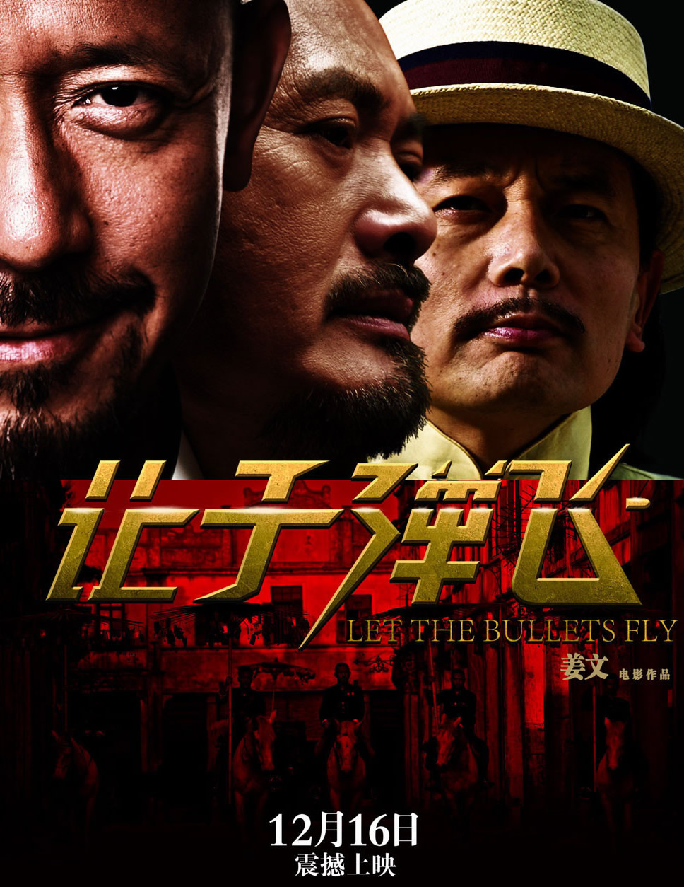
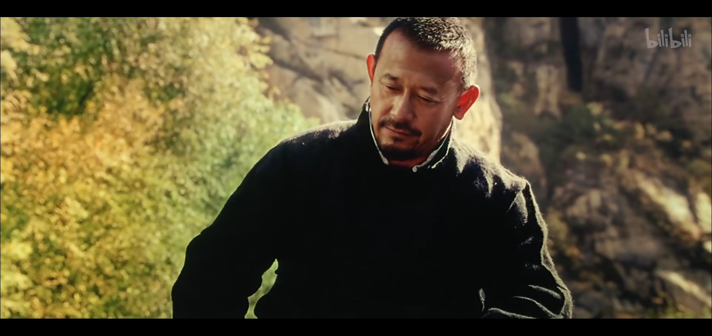
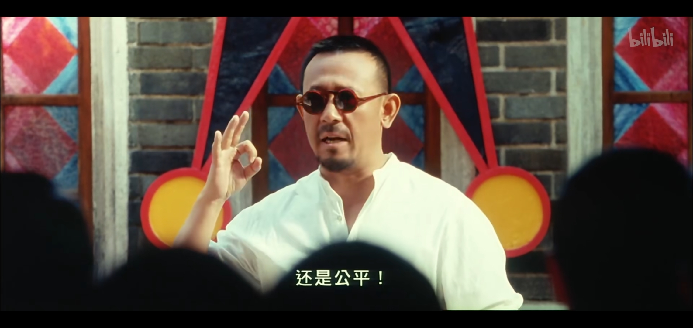
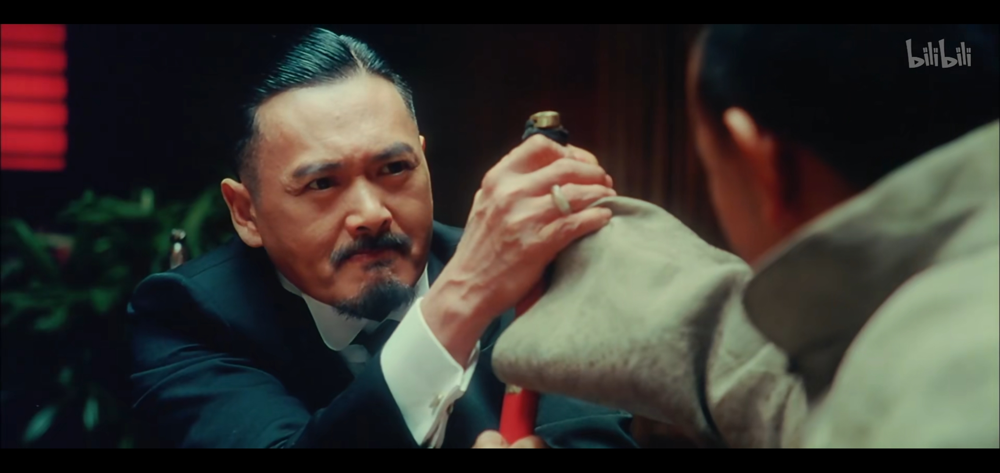
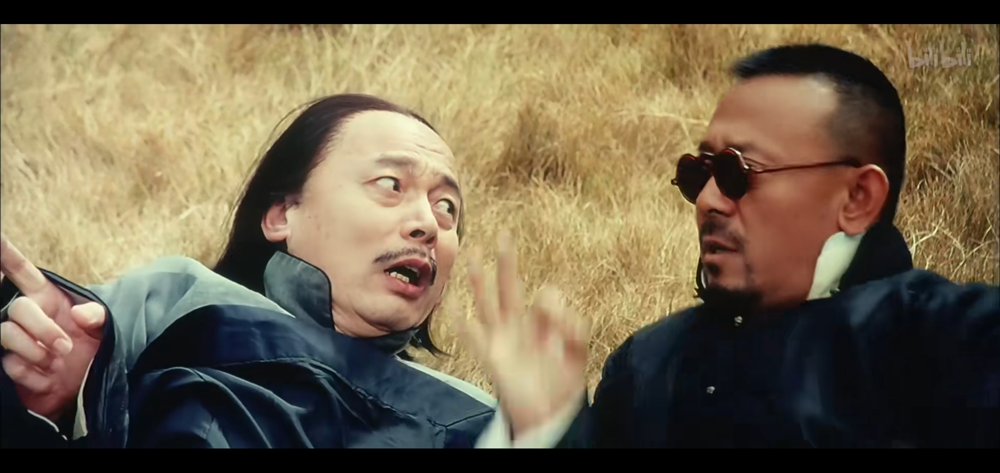
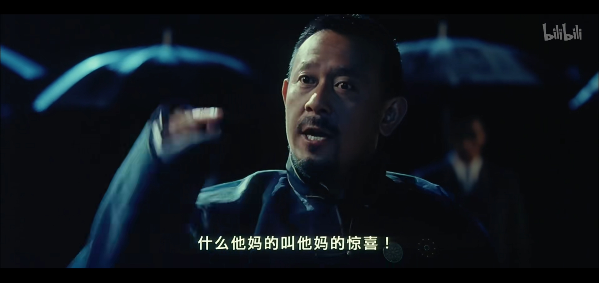
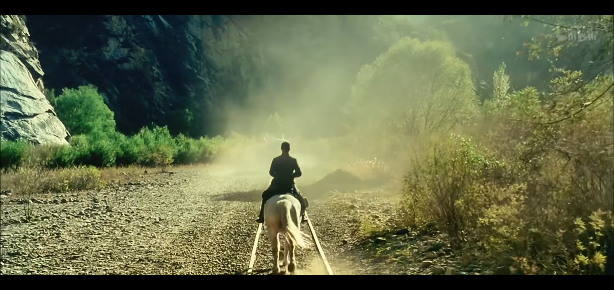

基本信息《让子弹飞》（英语：Let the Bullets Fly）是2010年上映的一部中国大陆剧情片，由姜文执导，为北洋三部曲的首部曲。电影改编自四川作家马识途的长篇小说《夜谭十记》中的第三记《盗官记》一节。 |
 |
剧情简介故事发生在1920年北洋年间中国南方，马邦德（葛优 饰）花钱购得县长一职，坐火车赴任途中遭劫匪张麻子（姜文 饰）一行人伏击，火车脱轨坠入水中，汤师爷（冯小刚 饰）和车上负责护送的铁血十八星陆军悉数丧生。张麻子向马邦德勒索钱财，马邦德谎称县长已死，自称汤师爷，让张麻子前往鹅城出任县长，方能把钱财弄到手。图为劫匪张麻子。  张麻子到鹅城后，从马邦德口中得知鹅城的前几任县长向百姓收税后都会与本地恶霸黄四郎黄老爷（周润发 饰）分成。张麻子则明确表示不搜刮穷人的钱。之后，黄府团练教头武智冲武举人（姜武 饰）当街打人，张麻子在官府主持了公正。图为张麻子在县衙强调“公平、公平、还是公平”。  黄四郎为报复张麻子，指派手下陷害张麻子的义子老六吃了两碗粉却只给了一碗的钱。老六为自证清白，选择剖腹自杀。张麻子等人发誓要为老六报仇。  散宴前，黄四郎给了张麻子两颗宝石，后来马邦德趁张麻子酒醉时将宝石偷到手。张麻子回到家中后，黄四郎派人假扮成山匪除掉县长，张麻子逃过一劫，但县长夫人（刘嘉玲 饰）遇害身亡。张麻子为县长夫人举行葬礼，邀请所有乡绅到场，让手下将黄四郎和城南两大家族的人绑架索要赎金。后来，他们发现被抓走的黄四郎其实是替身杨万楼。图为葬礼现场的情景。  张麻子收到城南两大家族的赎金后把两人释放，之后让手下把赎金都散发给穷人。这时，张麻子手下的真实身份被黄府的妓女花姐（周韵 饰）发现。花姐被抓回去后，决定留下来当山匪，负责看管黄四郎的替身。马邦德的前妻带着孩子来找马邦德，说马邦德八年前在山西开矿时，骗了她的钱和身子。马邦德把两颗宝石给了她。不久，黄四郎再度派人假扮成山匪，与张麻子的手下火并。黄四郎手下全部被杀死，为了避免暴露自己和假山匪的关系，黄四郎只得同意三天之后出资一百八十万给张麻子出城剿匪。图为一个雨夜，张麻子对阵黄四郎的珍贵摄影记录。  张麻子带人出城途中，遭到黄四郎指派的假山匪偷袭，交战中发现之前被派出接应的老二被杀并绑在气球上辱尸。几番枪战后，假张麻子被抓到，马邦德认出了装宝石的匣子，逼问之下，假张麻子说是杀了两个人到手的。马邦德悲痛之中驾驶马车想去山西，被预先埋下的地雷炸死。 张麻子决心报仇，回到鹅城向黄四郎宣战，把钱和枪支弹药散给百姓，假装进攻黄府，之后抬出黄四郎替身游街并斩首示众。鹅城百姓纷纷举枪追随张麻子把黄府攻陷。黄四郎最后抛出说要送给张麻子的帽子后引爆地雷自杀。 最后老三替老二娶了花姐，其他剩余的弟兄也尽数向张麻子告别前往浦东，片尾张麻子身坐白马骑在当初截火车的那条轨道上，后面兄弟们坐在火车上，花姐问老三去上海还是浦东，老三回答：“上海就是浦东，浦东就是上海！”在张麻子的目视下，火车尾俨然出现了黄四郎般的身影，张麻子便开始加速跟着火车骑乘着，电影结束。  |